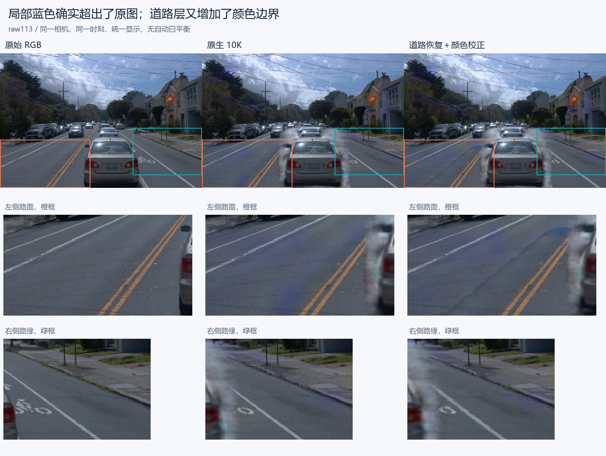
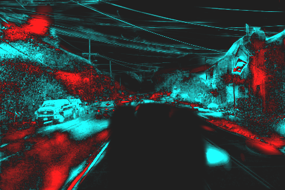
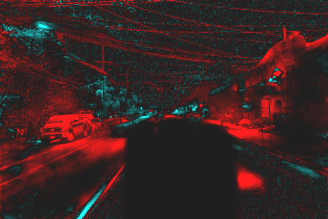

Scene008：局部偏蓝与道路色彩边界
2026-11-05 · 原始相机分辨率 480×320 · 本次仅做冻结诊断
49 帧原场景对照3 帧删除状态核对0 次训练更新AutoDL 保持开机
你指出的局部偏蓝确实超出了原图。道路色彩边界则在恢复道路插入时进一步增强。
左侧道路、右侧路缘在 49 帧里都比原图更蓝。原生重建中的方向背景通过剩余透射率参与道路和建筑成像；局部静态颜色与它相加后的误差没有完全抵消。新道路采用另一套固定颜色与透明度，插入后同时改变原静态层和方向背景的可见份额，因此边界两侧出现色差。
此前用全图平均颜色判断“原图本来就偏冷”不够充分：天空和其他区域会稀释局部异常。这份报告改为比较同相机、同位置的原始 RGB 和各阶段输出。
同位置直接对照
橙框为左侧道路，绿框为右侧路缘。下方用最近邻放大，保留实际像素；三列使用同一显示方式。

49 帧切换与局部放大
“保留”状态有同帧原图可对照；“删除”仅展示 105、113、130 三个诊断帧。被删车辆原本遮住的区域没有同帧删后真值，颜色表格排除了已知车辆区域。
| 阶段 | 相对原图的蓝色残差 | RGB MAE | 蓝色残差 >0.03 的像素 |
|---|
raw113 原生输出无损 PNG · 原生蓝色残差图（橙红：额外偏蓝；青：更少蓝；固定幅度 ±0.08）。
局部偏蓝：原生重建已经存在
蓝色量定义为 B−(R+G)/2。这里比较渲染值与原图的差，数值范围按 RGB 0–1 计。均值按各区域有效像素数加权，已知车辆像素排除。
| 固定画面区域 | 原图蓝色量 | 原生蓝色量 | 新增蓝色残差 | 残差为正帧数 |
|---|
| 左侧道路 | 0.04566 | 0.06175 | +0.01610 | 49/49 |
| 右侧路缘 | 0.03163 | 0.03786 | +0.00623 | 49/49 |
| 右侧建筑 | 0.02159 | 0.02877 | +0.00718 | 49/49 |
| 左侧树木 | 0.03411 | 0.03346 | -0.00065 | 6/49 |
| 已观测道路 | 0.04824 | 0.05554 | +0.00730 | 47/49 |
左侧道路新增蓝色均值为 +0.01610，右侧路缘为 +0.00623。左侧树木整体残差接近零，说明问题有明显位置差异，不能用一个全图色温数值概括。
为什么方向背景会影响路面颜色
实际成像为 RGB = Σ(wᵢ·颜色ᵢ) + T·方向背景RGB，其中 T=1−总透明度。方向背景是按观察方向查询的已学习 RGB；它在当前模型里承载了天空之外的画面内容。道路和建筑处只要 T 不为零，该项也会参与颜色。
为了定位相对原图的新增偏蓝，三帧诊断按每层实际覆盖权重分配同像素原图，得到 层残差=层RGB−层权重×原图RGB。环境项对应 T×(方向背景−原图)。各项相加与真实 RGB 残差一致。
| 同位置诊断 | 静态层蓝色残差 | 方向背景蓝色残差 | 所有层合计 |
|---|
| 105 · 左侧道路 | +0.00151 | +0.00673 | +0.00796 |
| 105 · 右侧路缘 | -0.00200 | +0.00905 | +0.00688 |
| 113 · 左侧道路 | +0.00479 | +0.01226 | +0.01772 |
| 113 · 右侧路缘 | -0.00461 | +0.01170 | +0.00814 |
| 130 · 左侧道路 | +0.00784 | +0.00711 | +0.01444 |
| 130 · 右侧路缘 | -0.01385 | +0.01904 | +0.00519 |
左侧道路的方向背景和静态层都能带来新增蓝色；右侧路缘主要体现为方向背景的蓝色残差与静态层负残差未完全抵消。这是固定模型的成像项归因；分层本身没有独立颜色真值，也尚未证明训练中的哪一步首次造成这种补偿关系。

raw113：静态层残差
raw113：方向背景残差；与左图采用相同色标道路割裂：插入后的颜色与可见份额没有衔接好
先仅应用保存的静态透明度门控，再插入固定道路，最后启用已有世界颜色场。每一步都保留相同相机与原生排序规则。统计固定道路贡献边界（road αT=0.05）两侧相邻像素的 RGB 跳变，并与原图相同位置的梯度比较。
| 阶段 | 边界 RGB 跳变 | 相对原图的边界梯度误差 |
|---|
| 原始 RGB | 0.01719 | 0.00000 |
| 原生 10K | 0.01585 | 0.01376 |
| 仅静态门控 | 0.01570 | 0.01460 |
| 道路 1K | 0.01975 | 0.01863 |
| 道路＋颜色校正 | 0.01936 | 0.01824 |
| 完整车辆替换 | 0.01936 | 0.01824 |
49 帧加权边界跳变由原生 0.01585 增至道路插入后的 0.01975；已有颜色校正降至 0.01936。完整车辆替换前后该边界统计相同。
代码路径解释了这个现象：道路颜色从跨时刻道路观测确定，1K 阶段冻结道路颜色与几何，仅优化旧静态高斯的透明度门控。插入道路后，原静态贡献和透出的方向背景同时减少；固定道路颜色没有与边界外原生成像共同拟合。后续 11×9 世界颜色场只调道路颜色，现有幅度与正则下减轻了部分差异，接缝仍然存在。
已定位的是“原生局部颜色误差”与“道路插入后新增的边界误差”两层问题。本轮没有训练修复，也没有验证某个新修复方案的收益。
验证、执行范围与复现
全部 49 帧保留状态，另含三帧删除状态；pilot、完整核对和分层参考替换分别保存。所有颜色指标使用未裁剪的浮点渲染值。交互预览压缩为 JPEG，raw113 保留无损 PNG。固定画面框用于诊断，不代表跨帧语义跟踪。
分层 RGB 重建最大误差 2.6e-06；与原生参考入口最大差 0。检查点文件、冻结张量版本、道路状态和车辆资产几何保持不变。完整 49 帧诊断耗时 203.4 秒，独立 pilot 39.8 秒；训练更新为 0。GPU 与实例保持开启。
摘要数字 · 完整浮点指标 · 分层参考替换指标 · 远端现场和来源清单 · 诊断代码 · 分层代码
复现命令及证据边界
cd /root/autodl-tmp/drivingeditor_repro/campaign/scene008_local_colour_diag_20261105_r1
/root/autodl-tmp/envs/drivingeditor/bin/python source/diagnose.py --pilot --output pilot_new
/root/autodl-tmp/envs/drivingeditor/bin/python source/diagnose.py --output full49_new
保存的原始浮点数组：full49/*_exact.npz、reference_split/*_exact.npz
所有输出均写入新目录。没有改动父检查点或运行训练。
failure_ledger_delta: none（本轮细化已有颜色/合成现象，不新增方法验收失败）。
原生模型：2026-11-05 native_ownership run_r3/formal，带持久对象标签。道路父状态：native_road1k_20261105_r1/formal/checkpoint001000.pt。完整来源见 inventory。